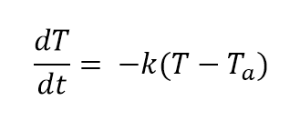
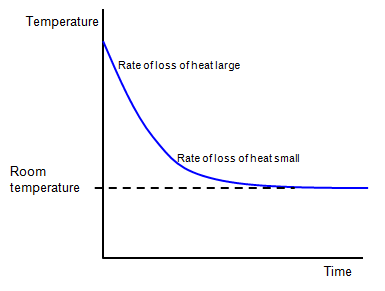

Equation & Graph


States that the rate of change of the temperature of an object is proportional
to the difference between its own temperature and the ambient temperature.
Newton's Law of Cooling is most prominently used in the field of Forensics and similarly related sciences to determine at precisely what time the victim passed away. This can be crucial to ongoing investigations and trials of notorious criminals. It can also be used to measure the temperature of objects that are too hot to be measured through standard methods, and must be cooled before attempting to calculate the temperature. By using this law, scientists are able to find the rate of cooling and determine what the initial temperature was, accurate to the degree.
A corpse was discovered in a motel room at midnight, and its temperature was 80°F. The room's temperature was kept at a constant of 60°F, and was kept that way for more than 24 hours. Two hours later, the temperature of the corpse dropped to 75°F. What is the approximate time of death?